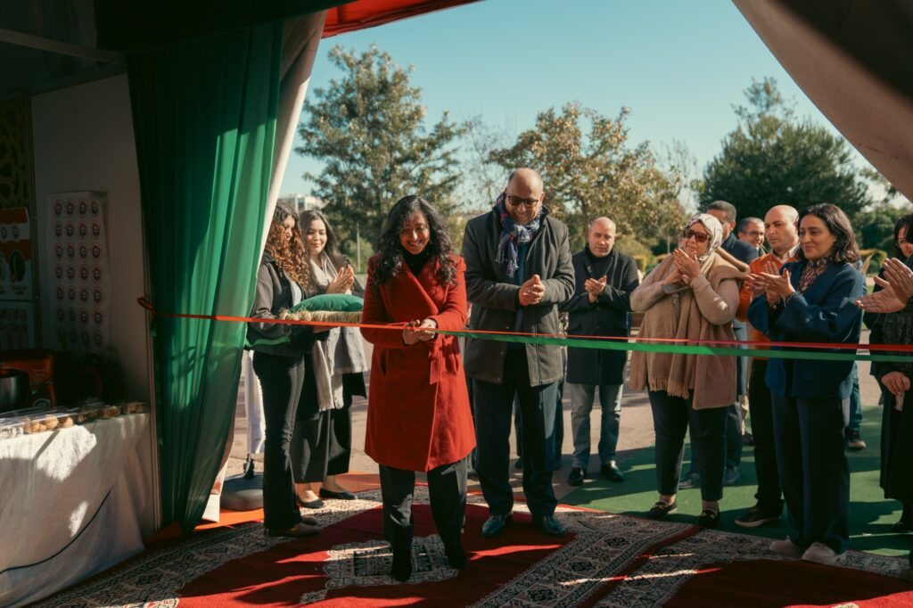
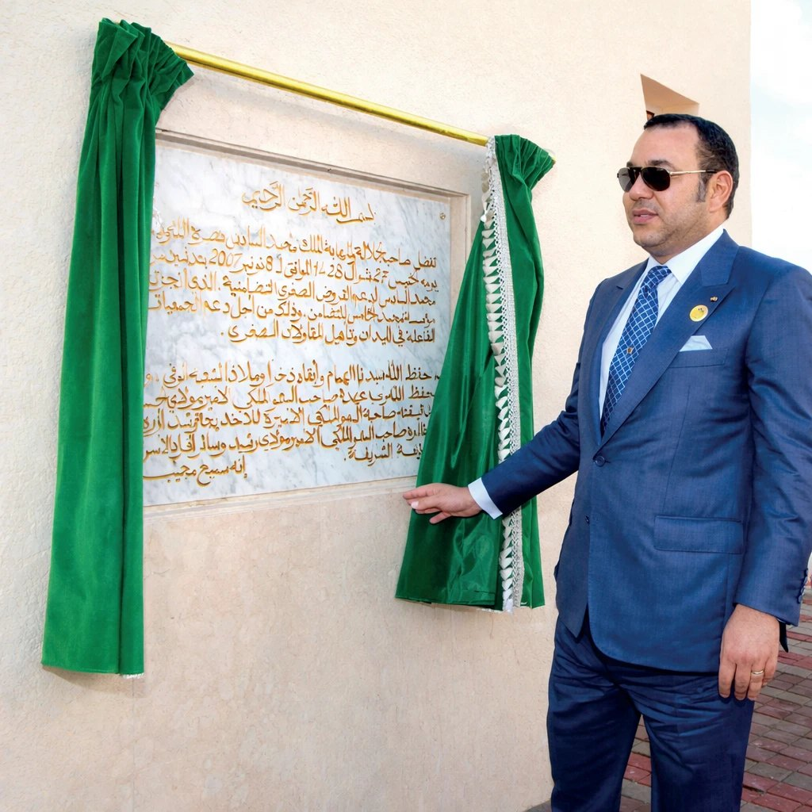
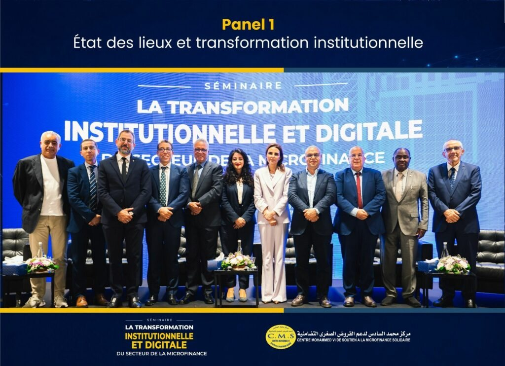
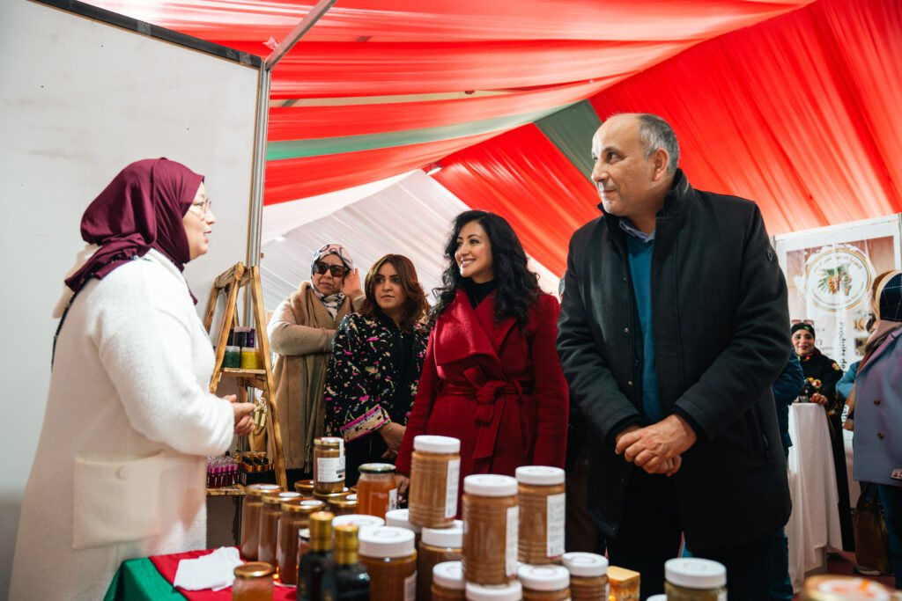
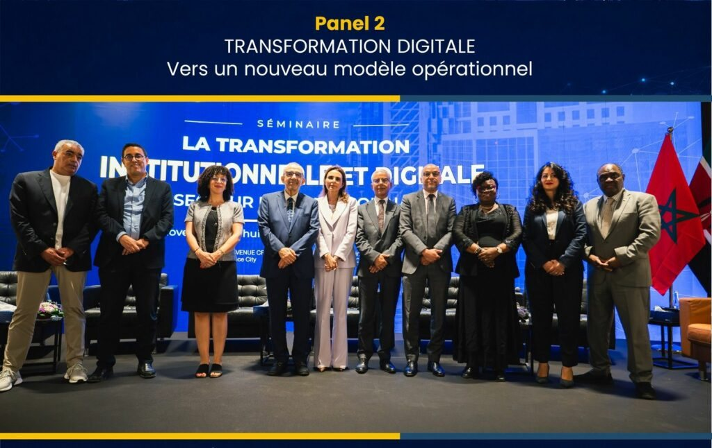
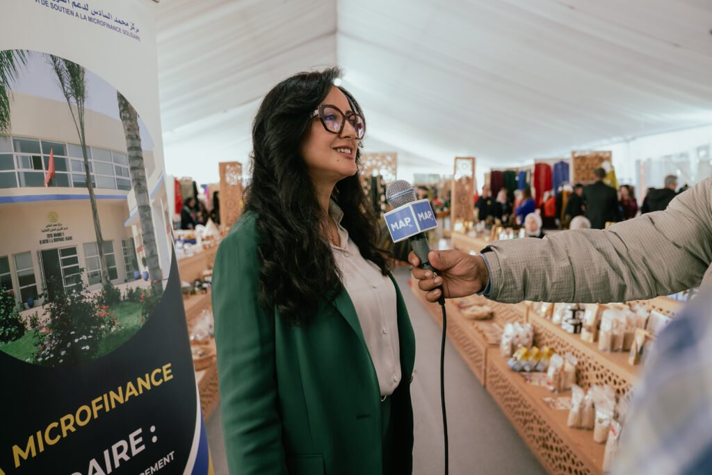

التكوين
ورشات وندوات ومحاضرات، وتكوين عن بعد لفائدة أعوان وزبناء جمعيات القروض الصغرى.
التمويل الأصغر التضامني · المغرب · منذ 2007
يواكب المركز المقاولين الصغار وجمعيات القروض الصغرى من خلال التكوين، ودعم تسويق المنتجات، ورصد القطاع، والتربية المالية.

أرقام مأخوذة من مصادر عمومية، يتعين تحيينها بالمعطيات الرسمية للمركز.

المركز
دُشّن مركز محمد السادس لدعم القروض الصغرى التضامنية في نونبر 2007، ليكون فضاءً في خدمة تنمية التمويل الأصغر بالمغرب لفائدة المقاولين الصغار وجمعيات القروض الصغرى.
تتمحور أنشطته حول ثلاثة محاور: مرصد التمويل الأصغر، والنهوض بالمقاولات الصغرى ودعم تسويق منتجاتها، والتكوين.
مهامنا
ورشات وندوات ومحاضرات، وتكوين عن بعد لفائدة أعوان وزبناء جمعيات القروض الصغرى.
لقاءات جهوية والمشاركة في المعارض لمساعدة المقاولين الصغار على تسويق منتجاتهم.
الإعلام والتوثيق ورصد القطاع، ومجلة متخصصة، وخريطة وطنية للتمويل الأصغر.
تحسيس المقاولين الصغار بتدبير الميزانية والادخار والقروض.
البرامج
اختر الفئة المستهدفة لاستكشاف البرامج.
دعم الأنشطة المدرة للدخل الممولة بالقروض الصغرى، أُطلق سنة 2014 مع مؤسسة صندوق الإيداع والتدبير والفيدرالية الوطنية لجمعيات القروض الصغرى وجيدة.
تكوين عن بعد لفائدة أعوان وزبناء جمعيات القروض الصغرى.
لقاءات جهوية ومعارض لتثمين منتجات المقاولات الصغرى.
ورشات تطبيقية لتدبير الميزانية والادخار والقروض بشكل أفضل.
أداة لرسم خريطة التمويل الأصغر بالمغرب، يشرف عليها مرصد المركز.
اتفاقية وُقّعت في مارس 2021 لتشخيص المؤهلات السوسيو-اقتصادية لجهات المملكة الاثنتي عشرة.
الحضور الجهوي
يواكب المركز المقاولين الصغار وجمعيات القروض الصغرى في جميع الجهات، التي يشملها بالخصوص التشخيص السوسيو-اقتصادي المنجز مع جيدة. اختر جهة لعرض التفاصيل.
جهة يغطيها المركز (12/12)
الخريطة © المساهمون في OpenStreetMap (ODbL)
المستجدات

جلستان: تشخيص الوضع والتحول المؤسساتي، ثم التحول الرقمي ونموذج تشغيلي جديد.
افتتاح رسمي وزيارة أروقة العارضين الذين يواكبهم المركز.

الدورة الثامنة لبرنامج الأنشطة المدرة للدخل تنتقي 200 مشروع يحملها 476 مستفيداً من سبع جمعيات للقروض الصغرى.
بالصور


يوجهك فريقنا نحو التكوين أو البرنامج الأنسب لك.
اتصل بنا